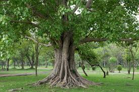

Peepal Tree (Ficus religiosa)
Scientific Name: Ficus religiosa
Description: The Peepal tree is sacred in Hinduism, Buddhism, and Jainism. Known for its heart-shaped leaves, it is often associated with wisdom and knowledge. It is considered a symbol of life and longevity, often found near temples and religious sites.
Care Tips:
- Water: Requires regular watering but prefers well-drained soil.
- Light: Grows best in full sunlight.
- Temperature: Thrives in tropical climates with temperatures between 25°C and 35°C.
- Soil: Prefers well-drained, fertile soil.
Uses:
The Peepal tree has religious significance and is often used for meditation and spiritual purposes. Its leaves and bark are also used in traditional medicine.